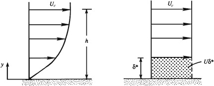
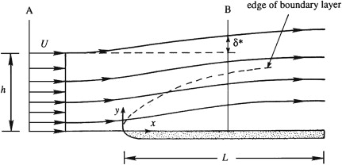

Schematic depiction of the displacement thickness. The panel on the left shows a typical laminar boundary-layer profile. The panel on the right shows an equivalent ideal-flow velocity profile with a zero-velocity layer having the same volume-flux deficit as the actual boundary layer.
The thickness of this zero-velocity layer is the displacement thickness \(\delta^*\)
The displacement thickness is the distance by which the wall would have to be displaced outward in a hypothetical frictionless flow to maintain the same mass flux as that in the actual flow. This means that the displacement thickness can be interpreted as the distance by which streamlines outside the boundary layer are displaced due to the presence of the boundary layer.
Displacement thickness and streamline displacement. Within the boundary layer, fluid motion in the downstream direction is retarded, so $\partial u/\partial x$ is negative. Thus, the continuity equation requires $\partial v/\partial y$ to be positive, so the boundary layer produces a surface-normal velocity that deflects streamlines away from the surface . Above the boundary layer, the extent of this deflection is the displacement thickness $\delta^*$

Equating mass flux across two sections A and B $$ U_e\,h=\int_{y=0}^{h+\delta^*}\!u\,dy \;=\;\int_{y=0}^{h}\!u\,dy+U_e\,\delta^*, \quad\text{or}\quad U_e\,\delta^*=\int_{y=0}^{h}\!\big(U_e-u\big)\,dy $$ where $h$ is the wall-normal distance defined above
◀ ▶